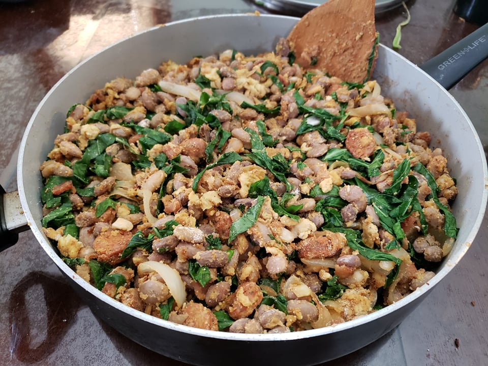

Feijão Tropeiro

Ingredients:
- 1 lb Dry carioca beans, or substitute Dry pinto beans
- 14 oz Calabresa sausage, sliced, or substitute Chorizo or any smoked sausage
- 1/2 lb Thick sliced bacon, diced
- 6 cups Water
- 2 Bay leaves
- 1 Onion, sliced
- 6 cloves Garlic, minced
- 5 Eggs, scrambled
- 1 cup Manioc or Cassava flour, toasted, or to preference
- 1 bunch Collard greens, thinly sliced, large stems removed
- 2 Scallion greens, finely chopped
- Salt, to taste
- Black pepper, to taste
Instructions:
- Wash the beans with water until the water runs clear. Soak the beans in clean water overnight.
- Place the beans into a pot with the 6 cups water and bay leaves. Bring to a boil and then reduce to a simmer. Cook uncovered until the beans are al dente, about 45 minutes to 3 hours, depending on how long the beans are soaked. The beans are cooked when if you take a spoonful of them and blow on them gently, the outer skins of the beans would peel back. Drain the beans into a colander
- Place a very large pan over medium heat. When it is hot, fry the diced bacon in its own fat, when it is beginning to brown, add the sausage and fry them with the bacon. Reserve the bacon and sausage, but leave the remaining fat in the pan.
- In the same pan, add the onion and sauté until the onion is translucent. Add in the garlic and sauté for another minute.
- Move the onion and garlic to one side of the pan away from the heat source. Over the heat source, add in the eggs. Once the eggs are firm, break it into small pieces with the spoon.
- Add back in the meat and the beans. Sauté for 1-2 minutes for the flavors to mix.
- Mix in the toasted cassava flour gradually to the desired proportion. Add more if you want it drier and less if you want it wetter.
- Fold in the collard greens until they are wilted. Add and mix in salt and pepper to taste.
- Remove from heat and mix in the scallion greens before serving.